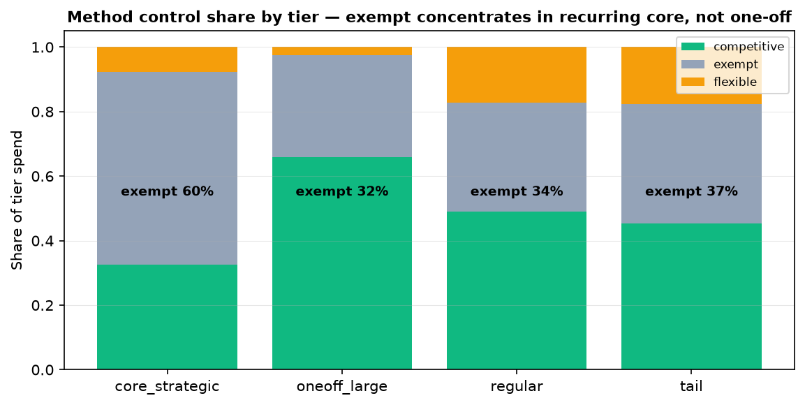

1. Why this analysis
The State of California runs procurement for 200,533 purchase orders across 24,732 suppliers. Procurement & finance teams routinely cannot see three things that drive cost and risk:
- Where money concentrates — a few healthcare-payer organizations swallowing most spend, which is where payment-reconciliation risk lives.
- Which payments are uncontrolled — spend routed through exempt or flexible ("non-standard") methods that deserve governance review.
- One-off vs recurring relationships — giant one-time settlements vs steady strategic partners, which need different controls.
Scope note on "reconciliation". This project delivers data-level reconciliation: collapsing a dirty 909k-line extract into one consistent, deduplicated, matchable purchase-order table. Business-level payment reconciliation (claims vs invoices vs POs) needs claims & invoice data that this extract does not contain — we quantify that gap and mark it as the next step rather than claiming to have done it.
One-sentence goal: identify the small number of high-impact levers — control review of non-standard methods, reconciliation & rate-audit of the giant healthcare payees, and strategic-supplier management — that protect taxpayer money.
2. How the raw extract became a usable table
The raw CSV had ~909k physical lines but only 346,018 logical records: many text fields (item name, description) span multiple lines, so naive row reads over-count. Key steps (scripts/clean_data.py):
| Issue | Treatment | Impact |
|---|---|---|
| Physical vs logical rows | Read full rows; multi-line text fields belong to one record | 909k lines → 346,018 clean records, 0 rows lost |
Money as $1,234.56 strings | Strip $/commas, parse to float | Unit & total price usable for math |
Dates as MM/DD/YYYY text | Parse to datetime, derive month/fiscal-year | Time trends + lumpy giant-payment months visible |
Location dirty field "ZIP\n(lat,lon)" | Keep only 5-digit ZIP | 262,270 lines with clean ZIP |
| UNSPSC code | Keep first 2 digits as product segment | Category roll-ups possible |
| Acquisition method | Map to control class: competitive / exempt / flexible | Identifies uncontrolled spend |
| Dates (esp. Purchase Date) | Year-sanity check (2000–2026); absurd years (1911–2912) → NaN | 17,634 purchase dates nulled, 0 rows lost |
No rows were dropped; the 909k→346k difference is a reading artifact. The raw Purchase Date field is dirty (years 1911–2912): 17,634 absurd values are set to NaN so no downstream analysis can silently use them; the clean creation_date (2012–2015) drives the time trends.
3. Headline numbers
Metric definitions
| Metric | Formula / definition | Why it matters |
|---|---|---|
| Total spend | Σ total_price over all lines | Scale of the program |
| CR4 / CR8 | Σ spend of top-4 / top-8 payees ÷ total | Concentration among the biggest payees (the reconciliation target set) |
| Top-10 share | Σ top-10 suppliers ÷ total | How concentrated purchasing is overall |
| HHI | Σ (supplier_share)² (secondary) | Standard concentration index (0–1), kept as a note |
| Method control class | competitive / exempt / flexible | Share of spend by procurement channel |
| Exempt-method spend | Σ spend routed as legally exempt | 40.1% of spend — legitimate but needs governance review, not "maverick buying" |
| Flexible-method spend | Σ spend on SOQ, NCB, Emergency, etc. | Reviewable / higher-risk purchasing |

Spend is lumpy, not steady: a handful of giant payment months dominate (Mar 2013 = $23B, driven by a single $11B payment to one health plan; Apr/Jun 2014-15 spike too). Most months sit under ~$4B.
Plan cash around the health-payment calendar, not a flat monthly target; treat these one-off/large settlements as a separate reconciliation workstream rather than routine procurement.

A single department — Health Care Services — is 66% of all spend. Whatever drives health-payer costs drives the entire state budget.
Stand up a dedicated healthcare-payer payment program: with two-thirds of spend here, a dedicated reconciliation & rate-audit team pays for itself many times over.

The top-10 payees are 41.4% of all spend and every one is a healthcare-payer organization (Health Net, L.A. Care, Delta Dental, Blue Cross, IEHP, Molina…). Money is concentrated among payment recipients, not goods vendors.
Treat these as a payment-reconciliation cohort: reconcile claims vs invoices vs POs, audit rate agreements & settlement timing, and track un-reversed rebates/return accruals — not a goods-negotiation target.

Health Care Services dominates; the rest is a long tail across corrections, transportation, water, education — each well under 4%.
For the long tail, push standard catalog / framework purchasing to capture small scattered buys under managed channels.

By product category, UNSPSC segment 85 (healthcare) = 73.9% of spend; nothing else comes close.
Build a category benchmark baseline for segment 85 so an above-market unit price becomes visible at contract time; pair it with payment-level checks (rate vs agreement).
4. Business-driven methods (principle · why · how)
4.1 Supplier segmentation with KMeans clustering
Principle. KMeans groups suppliers so those inside a cluster are similar and clusters differ, using scaled features of scale × stickiness: total spend, avg order, order count, order frequency, and years active (log/standardised).
Why (business-driven). A spend ranking alone is misleading: it cannot tell a one-off giant settlement from a steady multi-year strategic partner — two groups that need completely different controls. Clustering separates them.
How. StandardScaler → business-chosen k=4 (silhouette favours 2 — one big blob, not resolvable; k=5/6 score higher but only subdivide the low-frequency tail with no new business-meaningful group) → n_init=10, seed fixed. The recurring core is verified against a naive top-N cut: overlap with top-20 spenders is only 6 of 1,921.
| Tier | Suppliers | Spend | Share | Character |
|---|---|---|---|---|
| Core (recurring) | 1,921 | $45.6B | 30.1% | Multi-year, high-frequency partners — strategic-relationship targets |
| One-off / large | 4,583 | $104.1B | 68.8% | Single / low-frequency big payments — reconciliation & rate-audit cohort |
| Regular | 6,917 | $1.36B | 0.9% | Mid-size, occasional |
| Tail | 11,311 | $0.17B | 0.1% | Small, one-off |
Reading the core honestly. The recurring core is not all "vendors": 190 entities are public bodies (County/City/State — County of Los Angeles $4.4B, Ventura $3.0B…), i.e. 57.8% of core spend, plus 1 "Unknown". These are intergovernmental payments, not negotiable suppliers; the remaining ~42% of core is the private strategic-supplier set that recommendation #3 targets.

KMeans on scale × stickiness separates 68.8% of spend that is one-off/large (single-year, low-frequency big settlements) from a 30.1% recurring core of 1,921 multi-year partners — a split a spend ranking cannot produce. Core overlaps top-20 spenders by only 6 names.
Route the one-off/large tier to a payment-reconciliation workstream (claims vs invoice vs PO, settlement timing, rate vs agreement); reserve relationship management for the recurring core — they are where long-term leverage lives.
4.2 Method control & the exempt channel
Principle. Each order is mapped to a control class — competitive (open competition), exempt (legally exempt from competition), or flexible (non-standard but reviewable methods such as Statement of Qualifications, Non-Competitive, Emergency).
Why. Control is the second lever after concentration: uncontrolled spend is where both fraud risk and missed savings hide.
How & honest framing. Spend splits 55.7% competitive / 40.1% exempt / 4.2% flexible. The exempt 40.1% (~$60.6B) is not "maverick buying" — much is a legal channel (healthcare payments, statutory exemptions, single-source) — but at 40% it warrants a documented rationale + sampling, not silent acceptance.

Competitive and legally-exempt methods carry most spend; $6.36B still flows through flexible methods that deserve process review, and the exempt share (40.1%) needs a documented basis.
Sample-review the top flexible-method purchases and attach a documented exemption rationale to each exempt payment; set a "spend under management" target to pull more buying into controlled channels.

Crossing method with segmentation flips the intuition: exempt is concentrated in the recurring core (59.7%) — largely intergovernmental legal transfers — while the one-off/large tier is mostly competitive (≈66%). Exempt ≠ the big one-off payments.
Govern two different things: document the exemption basis for the core (intergovernmental transfers), and run claims-vs-invoice-vs-PO reconciliation on the one-off/large tier's competitive contracts — a separate workstream.
5. Pulling it together: an actionable plan
1 · Run payment reconciliation on the one-off/large tier
68.8% of spend is one-off/large, concentrated in 41.4% top healthcare-payer payees and mostly competitive contracts. Reconcile claims vs invoices vs POs and audit rate & settlement timing — this requires claims/invoice data the extract lacks, so it is marked as the next step, not claimed as done.
2 · Document exempt spend in the core, review flexible spend
Exempt (40.1%) is concentrated in the recurring core (59.7%) — largely intergovernmental legal transfers. Attach a documented rationale there; sample the $6.36B flexible-method buys.
3 · Manage the private strategic core deliberately
Of the 1,921 recurring-core payees, ~42% are private multi-year suppliers (30.1% of spend overall); manage them as strategic accounts. The ~58% public bodies are intergovernmental payments — govern, don't negotiate.
4 · Build a benchmark baseline before any price verdict
Add a SKU-level / market-price baseline for segment 85 so a future unit-price screen is a true overpricing detector, not a misleading flag queue.
Deliverables in repo: cleaned table (output/procurement_clean.parquet), flexible / anomaly / segmentation outputs, charts (assets/), and this report.